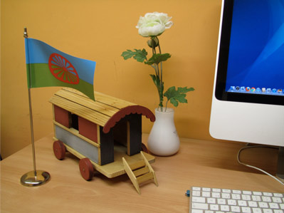

:: Sitio web de Roberto Gutiérrez durante mi etapa como diseñador gráfico en Kale Dor Kayiko
Lo (+) nuevo:
Cambios recientes:
2016:
Febrero:
- 19/02/2016
Actualización 2: Index.html
- 18/02/2016
Actualización.
- 17/02/2016
Actualización.
- 16/02/2016
Actualización.
- 15/02/2016
Actualización.
2014:
Febrero:
- 26/02/2014
Empiezo a trabajar en la página 'roberto_gutierrez.html'. Será la primera sección en HTML 5.
- 24/02/2014
Enlazada la web con el perfil de Google+.
- 21/02/2014
He modificado las secciones de la web. La nueva web será muy parecida respecto al diseño que la que tengo ahora, pero voy a "aligerar el menú", por así decirlo. Voy a eliminar secciones no porque crea que no son interesantes, sino porque en el futuro voy a necesitar una web más sencilla de actualizar.
- 20/02/2014
HTML5: Estoy modificando la página: 'roberto_gutierrez.html'
De XHTML a HTML 5
2012:
Octubre:
- 29/10/2012
Mudanza: Empiezo el cambio de todo el sitio web a HTML 5.
De XHTML a HTML 5
Septiembre:
- 30/09/2012 ¿Where I work?... Ver...
...
Junio:
- 02/06/2012 - "Mamá: ¡Ésta no!... La grande, la bandera del Athletic GRANDE que teníamos... ¿No te acuerdas?"...
He modificado el texto y he añadido nuevos enlaces relacionados. Ver...
Mayo:
- 29/05/2012 - "Mamá: ¡Ésta no!... La grande, la bandera del Athletic GRANDE que teníamos... ¿No te acuerdas?"... Ver...
- 28/05/2012 - Interculturalidad 4.0: Mi alma gemela televisiva... era una chica... gitana... (!) HTML 5. Ver...
- 24/05/2012 - "¿Verdadero o falso? ¿Una madre gitana de Bilbao que crakea la play?". HTML 5. Ver...
- 21/05/2012 - *3
- 20/05/2012 - "¿Cómo edita un 'e-book' en 10 minutos?"... Ver...
- 12/05/2012 - "La madre gitana que crakea la play"... He añadido una sección de Enlaces relacionados... Ver...
- 10/05/2012 - Primer borrador: "¡Begoña Ortuondo (Obra social de la BBK) y Rosa Santibañez (Universidad de Deusto): La importancia de los gestos!"... Ver...
Abril:
- 24/04/2012 - Primer borrador: -"¡Para, papa!, que yo me bajo y voy andando que llego antes" Ver...
- 23/04/2012 - Primer borrador: "El Pastor del Culto de Miribilla"... Ver...
- 22/04/2012 - Primer borrador: "¿Verdadero o falso?: ¿Una madre gitana de Bilbao que es capaz de 'crakear' la play?"... Ver...
Primer borrador: "¿Cuál es el jugador favorito del Athletic del pueblo gitano de Bilbao?"... Ver...
- 21/04/2012 - Primer borrador: "Jon Jimenez: El niño gitano al que le gustaba muchísimo leer"... Ver...
- 16/04/2012 - Edición del Index (la página de inicio). Marcadores de páginas de punto de lectura exacta: Una pequeña idea que cambia el mundo... Ver...
Marzo:
- 27/03/2012 - Segundo borrador: "El Tío Manuel: La excelencia para el alumnado gitano". Ver...
- 22/03/2012 - Primer borrador: "El Tío Manuel: La excelencia en el alumnado gitano". Ver...
Febrero:
- 19/02/2012 - Sarah Carmona hablará en Bilbao el próximo martes 21 a las 12 en Bilbao en el salón de Actos de la Bolsa. Entrada con invitación.
Sección '¿Existe un pueblo gitano que no conoces?...' Nueva fotografía de Sarah Carmona y actualización de su currículum. Ver...
Invitaciones: Kale Dor Kayiko...
- 09/02/2012 - *2
- 06/02/2012 - Secciones '¿Existe un pueblo gitano que no conoces?' e 'Inicio'. He añadio un icono de un "video" en los sumarios para distinguir ya desde el índice de esas secciones qué contenidos son audiovisuales...
- 01/02/2012 - '¿Cómo editar un libro digital en tres minutos?'... 'Recursos (ONLs)'... Ver...
- Modificación en el Menú: Ahora 'Kale Dor Kayiko' aparece recuadrado.
- 'Opinión: Bloc de apuntes': ¿Eres educador/a social y dudas que los diseñadores/as gráficos/as odien la 'Comic sans'?... Ver...
Enero:
- 31/01/2012 - Nueva sección: 'Recursos (ONLs)'... Ver...
- 24/01/2012 - 'Opinión: Bloc de apuntes'.
- 23/01/2012 - He añadido tres definiciones en la sección 'Oyer Corazón: ¿Cómo le definirías qué es el diseño a un 'no diseñador'?:
- Armando Sotoca,
- José Manuel Mateo...,
- y (al final) un poema de Mario Benedetti que cita Roberto Gramonal cuando le preguntan 'qué es el diseño'...
- 22/01/2012 - '¿Existe un pueblo gitano que no conoces?'... Edición del editorial y de la sección 'Nosotras las artemisas'.
'The payo who draws'. Nuevo apartado: Where is Bilbao? L’arc Rouge (The red arc), Guggenheim Museum Bilbao. Daniel Buren .
- 16/01/2012 - Edición: Sección 'Opinión: Bloc de apuntes'...
- 12/01/2012 - 1er borrador. Nuevo artículo para la sección 'Opinión: Bloc de apuntes': Mi alma gemela televisiva...
- 10/01/2012 - Nuevo artículo para la sección 'Opinión: Bloc de apuntes'. Sin terminar...
Diciembre:
- 07/12/2011 - Está web está escrita con Xhtml y empezó siguiendo correctamente los estándares. Sin embargo en todo este tiempo he ido "dejando" pequeños errores a la hora de escribir el código que hacen que no todas las páginas puedan validar correctamente. Estoy 'limpiando el código' para corregirlo.
Secciones en las que estoy trabajando: 'Inicio', 'Lo (+) nuevo | cambios recientes', 'Visita rápida' y 'Humor'.
- 06/12/2011 - Modificación en el menú. La sección "Premios" desaparece -de momento (en vista del poco éxito)...-. Y he creado, sin embargo, una nueva sección: Alterntativa: El fin de las ocurrencias, todavía sin contenido...
Además he reestructurado ligeramente el menú: La sección 'Links' sube a la primera línea.
Noviembre:
- 26/11/2011 - Nuevo Índice para la sección 'Bloc de apuntes: Opinión'. Ver...
- 25/11/2011 - Sección 'Proyectos': Revisión. Ver...
- 23/11/2011 - Links: Euskalgym y Conexiones improbables: Virginia Imaz. Ver...
- *
- 22/11/2011 - Nueva recomendación en la sección Links: la Sala Kontainer. Ver...
- 11/11/2011 - Menú: Modificación del menú principal: Las secciones "productos Kale Dor Kayiko" y "productos Sim Romi" desaparecen. Las he agrupado en una única que se llama 'Proyectos'
En esta sección he añadido información sobre el Curso de Palmas para Payas y payos... Ver...
- 02/11/2011 - Opinión: ¿Por qué los educadores y las educadoras sociales no pueden llevarse bien con las diseñadoras gráficas y los diseñadores gráficos? Edición. Ver...
- 01/11/2011 - Nuevo artículo en la sección 'Opinión': ¿Por qué los educadores y las educadoras sociales no pueden llevarse bien con las diseñadoras gráficas y los diseñadores gráficos? Romeo contra Julieta. Ver...
- 30/10/2011 - ¿Quién soy?: Pequeña modificación en la sección 'Quién soy'. Ver... Además he actualizado ligeramente la sección 'Opinión/¿Cómo definirías qué es el diseño a un no-diseñador. Ver...
- 24/10/2011 - "¿Cómo definirías que es el diseño a un no-diseñador?". Artículo. Sección "Opinión". Este artículo incluye opiniones de Oyer Corazón, Riccardo Marzullo y Gemma Figueras. Ver...
- 22/10/2011 - Modificación en el menú: He añadido una nueva sección: 'Opinión' . De momento simplemente he modificado el menú.
- 11/09/2011 - Pequeña modificación del menú: La sección "¿Eu?", ahora se llama "Buscador"; cambia la posición en el menú y ahora se sitúa tras "Links". Además le he añadido un pequeño icono descriptivo: una lupa para resaltarla y una sugerencia para utilizar 'Ctrl+F' en las búsquedas dentro de esta web.
- 09/09/2011 - Nuevo formato para la sección "Lo (+) nuevo".
*3
- 22/05/2012
Primera página en HTML 5 del sitio web.
Jon Jimenez: El niño gitano al que le gustaba muchísimo leer...
Ver...
*2
- 09/02/2012
Carromato gitano

Lo compré en una tienda de juguetes de Bilbao. Es de madera y hoy lo he puesto en mi mesa de trabajo en Kale Dor Kayiko.
*
- 20/11/2011
Cursos de Palmas para payas y payos...
Proyecto de educación social que rompe el estereotipo en el que los profesores son siempre los payos y los gitanos los alumnos. En esta ocasión es al revés: Los profesores son gitanos y gitanas...
 Más información. Ver...
Más información. Ver...
 Ver su sitio web: Cursos de Palmas para payas y payos...
Ver su sitio web: Cursos de Palmas para payas y payos...